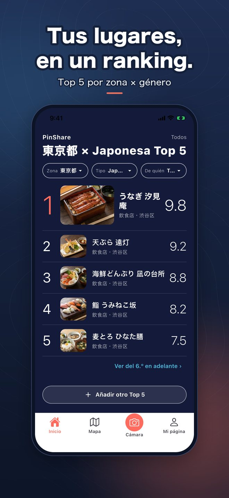
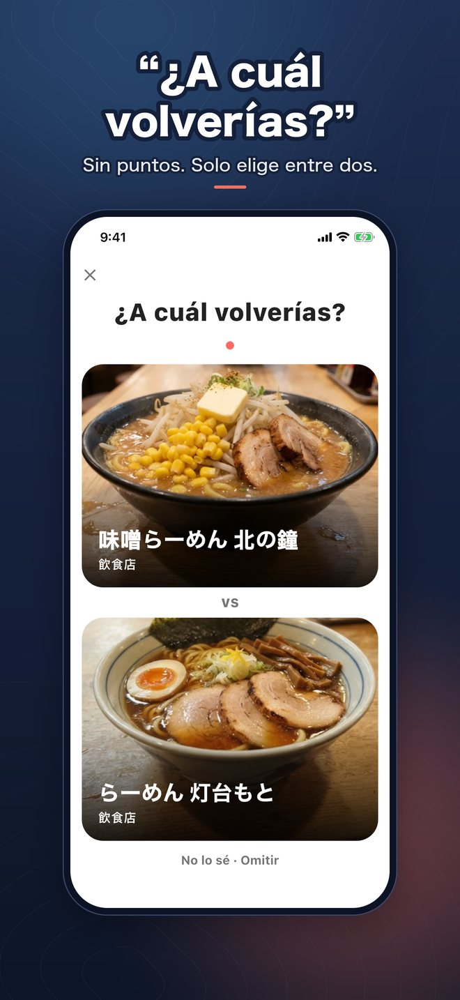
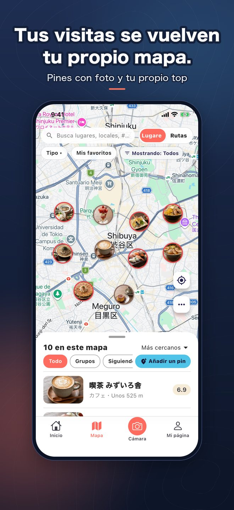
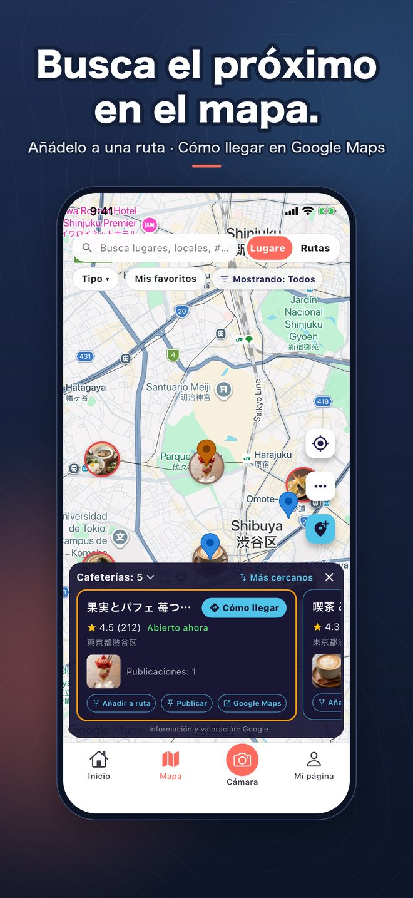
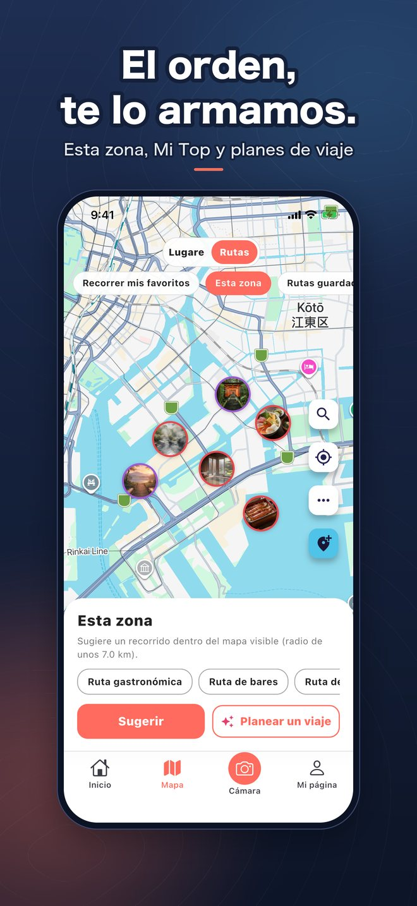
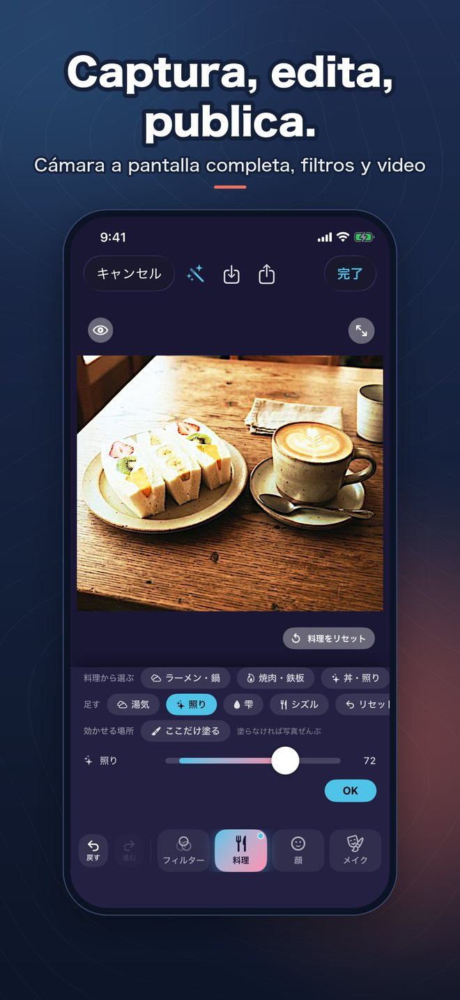

¿Cansado de elegir por estrellas?
En PinShare el orden lo decide una sola cosa: ¿volverías?
Demasiados lugares con 4,5 estrellas
Todos tienen buena nota y aun así no sabes cuál es bueno. Dejamos de mirar las valoraciones de esa manera.
Aburrido de rankings llenos de lugares caros
No se ordena por precio ni por fama, sino por dónde quieres volver. La picada de tu barrio puede ser el número uno.
Poner nota es difícil
Nadie distingue un 3,8 de un 4,1. Pero «¿este o aquel: a cuál volverías?» se responde al tiro.
Ver todo es gratis
Los rankings, el mapa y las rutas son gratis por ahora. Regístrate y empieza de inmediato.
Pantallas
Desliza hacia los lados.






Lo que puedes hacer
Comparar, guardar, buscar y recorrer: en una sola app.
🏆 Rankings comparando
Después de publicar, solo responde «¿A cuál volverías?». Sin pensar en notas: el orden se arma solo.
🥇 Top 5 por zona y género
Elige una zona y un género para ver el top 5. Cambia entre todos, las personas que sigues, tus grupos y tu propio ranking.
⚖️ Una persona, un voto
La nota es el promedio de lo que opinó cada visitante, un voto por persona. Ni los seguidores ni la cantidad de publicaciones cambian el peso de un voto, y publicar muchas veces el mismo lugar cuenta una sola vez.
📍 Tu propio mapa
Los lugares que visitaste quedan en el mapa como pines con foto. Filtra por género o muestra solo tus favoritos.
🔎 Encuentra el próximo lugar
Busca locales en el mapa por nombre del lugar o por lo que quieres hacer. Añádelos a una ruta y abre cómo llegar en Google Maps.
🗺️ Rutas y planes de viaje
Recibe un orden sugerido para la zona que estás mirando. Arma un plan de viaje a partir de un destino y la cantidad de días.
📷 Captura, edita, publica
Una cámara con filtros en vivo, texto y stickers, además de recorte de video y música: todo dentro de la app.
Gratis. Empieza en un minuto.
Busca «PinShare» en el App Store o toca aquí abajo.
Descargar gratisApp Store · iPhone Descargar en Google PlayAndroidTú eliges quién ve cada publicación (por defecto: solo tú). También puedes hacer privada toda tu cuenta y mostrarla solo a quienes apruebes. Cada publicación se puede denunciar, y puedes bloquear o silenciar. La edición de fotos se hace por completo en tu teléfono. Política de privacidad / Términos de uso (ambos en japonés)